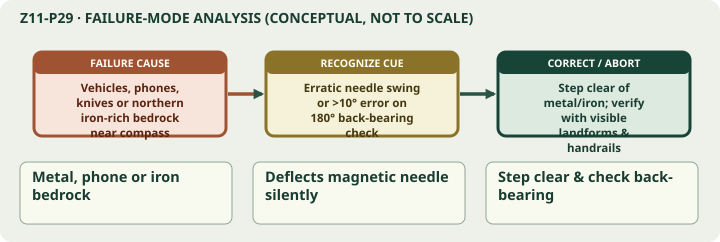

Z11-P29 · Navigation, weather and rescue · Adapted historical material
Guard compass readings against metal gear, phones and iron-rich rock
Eliminate false compass deflections caused by nearby ferrous metal, electronics and local magnetic bedrock.
When it applies · Taking any magnetic compass reading near packs, trekking poles, vehicles, knives or iron-bearing rock (such as northern Minnesota's Iron Range and basalt formations).
Equipment · Baseplate compass held level at chest/waist height clear of metal.

Actions
- Step several paces clear of vehicles, steel bridges, trail signs, metal fences, powerlines, stoves, knives, phones, smartwatches and magnetic jacket snaps before reading the needle.[N08]
- If reciprocal bearings disagree, recheck observation technique, equipment and nearby interference. The mismatch alone cannot identify the cause or establish a safe route.[N08, ED]
- Cross-check every field bearing against visible landforms and an oriented map so a localized iron-rock deflection cannot steer you quietly off-course.[N08, N03]
Failure recognition · Resting a compass directly on a metal car hood, steel stove pot or iron-rich outcrop to plot a wilderness bearing.[N08]
Verify · Hold the compass clear of watches, phones and belt buckles, confirm steady needle alignment and verify agreement with surrounding landforms.[N08, ED]
Stop or change course · When local iron-rich rock causes erratic compass swings, switch to map-to-terrain handrails and sighting on distant verified peaks/ridges rather than blind needle following.[N08, N03]
Evidence and editorial notes
- N03 · USGS · What is a Topographic Map (current web edition)
- Section: What is a Topographic Map > Contours and Relief · Conditions: Matching three-dimensional terrain shapes to two-dimensional contour lines
Support: Closed contour rings denote peaks or depressions (hachured), V-patterns point uphill in valleys/drainages and wide spacing marks gentle slopes while tight spacing marks cliffs or steep grades.
Limitations: Dense forest canopy or snow drifts can obscure subtle terrain features shown on the map. · Conflicting evidence: None; core topographic terrain-association evidence.
Editorial note: Supports ridge, valley, saddle and handrail terrain-interpretation cards. · Specialist reviewer: Navigation and cartography
Primary source · checked 2026-11-24
Current assessment · A04-N03 (2026-11-25) · Open: support partial or missing (A04): Contours and depression symbols supported. The broad V/uphill and cliff inference depend on drawing context and saddle/ridge distinction; require dedicated examples. Limits: Specialist review PENDING (Navigation and cartography); publication HOLD. All release decisions pending. - N08 · NOAA NCEI · Magnetic Declination (current web edition)
- Section: NOAA Magnetic Declination > definition and true-bearing conversion · Conditions: Using magnetic baseplate compasses near metal, electronics or iron-rich rock
Support: Declination is between true and magnetic north and varies by location and time. Grid convergence is separate. A device may already apply a correction.
Limitations: NOAA definition does not establish site-specific interference distances or diagnosis of magnetic anomalies. · Conflicting evidence: Aligns with B014-P13 and B014-P14.
Editorial note: Grounds declination conversion, metal-clearance and magnetic-anomaly cards. · Specialist reviewer: Navigation and geophysics safety
Primary source · checked 2026-11-24
Source lineage · B014-P14 and NOAA declination anomalies; new manuscript · Classification · Adapted historical material.